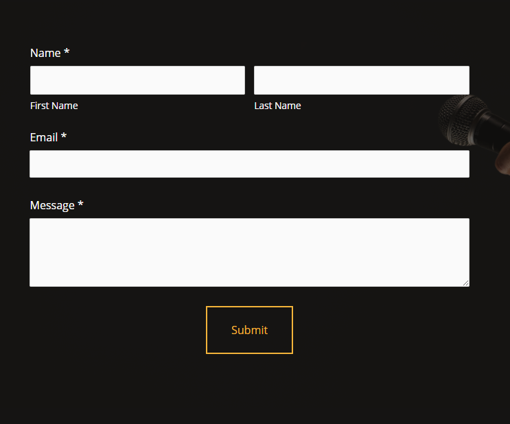
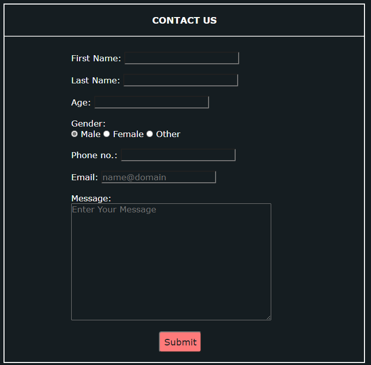
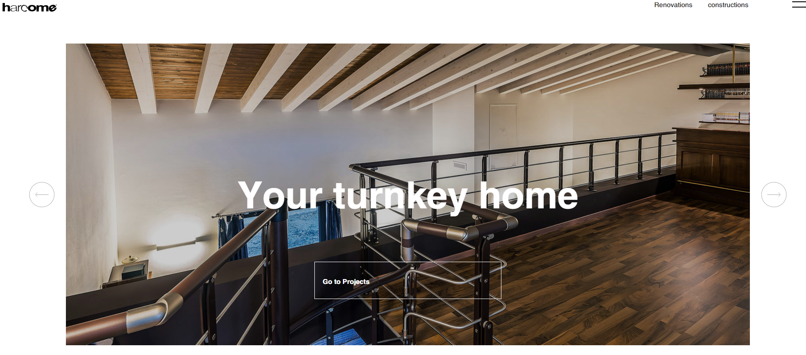

RESEARCH
To make this website, different websites were visited and taken as references. In this research webpage, the websites from which references are taken will be compared with this website. Five websites which are taken as reference are explained and compared with this website as shown below:
Research 1

Fig: Navigation Bar of the Box Clever Website
Fig: Navigation Bar of My Website
Research 1 contains the comparison of the navigation bar. To make the navigation bar of this website, the Box Clever website was taken as a reference. The figure at the top is the navigation bar of the Box Clever website. And, on clicking that image, it will navigate to the Box Clever website. The figure at the bottom is the navigation bar of this website. In both the website, the logo can be seen on the left side whereas the other content for navigation can be seen to be aligned in line on the right side. Likewise, hover effects can be found in the navigation bar. Similarly, the navigation bar fixed at the top of both of the websites can be seen on both websites. A dark orange-colored border can be seen in the navigation bar of this website whereas the Box Clever website does not have one.
Research 2
Fig: Footer of the Barrel Website
Fig: Footer of My Website
Research 2 contains the comparison of the footer. To make the footer of this website, the Barrel website was taken as a reference. The figure at the top is the footer of the Barrel website. And, on clicking that image, it will navigate to the Barrel website. The figure at the bottom in the footer of this website. On the Barrel website and this website, the copyright can be seen at the very bottom. But, on this website, the copyright is given different background colour. Icons of different social media platform can be seen in both the website. Likewise, hover effects can be found on the social media icons on both websites. On the Barrel website, an email subscription can be seen. But, on this website, the email can be seen as an icon that is kept with other social media icons.
Research 3

Fig: Footer of the Cedric Vella Website

Fig: Footer of My Website
Research 3 contains the comparison of the contact us form. To make the contact us form of this website, the Cedric Vella website was taken as a reference. The figure on the left side is the contact us form of the Cedric Vella website. And, on clicking that image, it will navigate to the Credic Vella website. The figure on the right side is the contact us form of this website. In the contact us form of both the websites; first name, last name, email, and message can be seen. In addition to them, age, gender with radio button and phone number can be seen in this website. Hover effects can be seen in the submit button on both websites. Any if any field is empty or incorrect, an error message can be seen and if the form is correctly filled, thank you message can be seen on both websites.
Research 4

Fig: Toggle Image of the Harcome Website
Fig: Toggle Image of My Website
Research 4 contains the comparison of the toggle image. To make the toggle image of this website, the Harcome website was taken as a reference. The figure on the left side is the toggle image of the Harcome website. And, on clicking that image, it will navigate to the Harcome website. The figure on the right side is the toggle image of this website. On both websites, the button can be seen for changing images. On the Harcome website, there are two buttons and on clicking the button, 3 different images are shown and are repeated with some animation effect. But, on this website, there is only one button and on clicking it different 9 images are shown and are repeated with no animation. The hover effects can be seen in the button of both websites.
Research 5
Fig: Internal Navigation Sidebar of the Reputation Squad Website
Fig: Internal Navigation Sidebar of My Website
Research 5 contains the comparison of the side navigation bar for internal navigation. To make the side navigation bar of this website, the Reputation Squad website was taken as a reference. The figure on the left side is the side navigation bar of the Reputation Squad website. And, on clicking that image, it will navigate to the Reputation Squad website. The figure on the right side is the side navigation bar of this website. In the side navigation bar of Reputation Squad, there is a menu button at top. And, the content in it are listen on top of each other with a line-like structure at the left side and a green color line could be seen to indicate where we are. But, in the side navigation bar of this website, button-like design can be seen with a white border on the right side. The hover effect can be seen on the side navigation of both websites. But, in the Reputation Squad website, there is active effect as well.